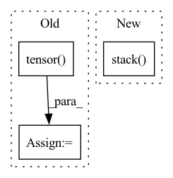

Pattern ID :1292
Before Change
// build an iterator for going over all J values
Jgen = list(itertools.product(*Jgen))
Jgen = torch.tensor( Jgen) .permute(1, 0).to(dtype=torch.long, device=device)
if interp_mats is None:
// set up params if not using sparse matsAfter Change
// phase for fftshift
y[-1] = y[-1] * tf.exp(1j * tf.linalg.matvec(om[b], n_shift))[None, ...]
y = tf.stack( y)
return y
In pattern: SUPERPATTERN
Frequency: 3
Non-data size: 3
Instances Fragment ID: 6376400
Project Name: zaccharieramzi/tfkbnufft
Commit Name: afe8894e906b6b5b97467a11098e4e412e8ade4c
Time: 2020-03-01
Author: zaccharie.ramzi@gmail.com
File Name: tfkbnufft/nufft/interp_functions.py
M Class Name: AnonimousClass
N Class Name: AnonimousClass
M Method Name: kbinterp(4)
N Method Name: kbinterp(4)
M Parent Class:
N Parent Class:
M File Name: tfkbnufft/nufft/interp_functions.py
N File Name: tfkbnufft/nufft/interp_functions.py
M Start Line: 217
M End Line: 280
N Start Line: 219
N End Line: 280
Before Change
bond_features.append(torch.tensor(bond_to_feature_vector(bond),dtype=torch.long))
edge_index = torch.tensor([row, col], dtype=torch.long)
edge_type = torch.tensor( edge_type, dtype=torch.long)
edge_attr = F.one_hot(edge_type, num_classes=len(self.bonds)).to(torch.float)
// bond_features = torch.tensor(bond_features, dtype=torch.float).view(len(bond_type), -1)
perm = (edge_index[0] * N + edge_index[1]).argsort()After Change
bond_features.append(bond_feature)
edge_index = torch.tensor([row, col], dtype=torch.long)
edge_attr = torch.stack( bond_features,dim=0)
perm = (edge_index[0] * N + edge_index[1]).argsort()
edge_index = edge_index[:, perm]
edge_attr = edge_attr[perm] Fragment ID: 6376397
Project Name: hannesstark/3dinfomax
Commit Name: 445adc95e71417794e8d36efe7a852b7de4cc6d5
Time: 2021-08-01
Author: hannes.staerk@gmail.com
File Name: datasets/file_loader_geomol_qm9.py
M Class Name: FileLoader
N Class Name: FileLoader
M Method Name: featurize_mol(2)
N Method Name: featurize_mol(2)
M Parent Class: Dataset
N Parent Class: Dataset
M File Name: datasets/file_loader_geomol_qm9.py
N File Name: datasets/file_loader_geomol_qm9.py
M Start Line: 125
M End Line: 145
N Start Line: 123
N End Line: 146
Before Change
matrix.indices()[0, :] != row_index]
replacement_row_indices = torch.stack(
[torch.tensor( row_index, device=matrix.device) ]*len(row.values()))
replacement_indices = torch.stack([replacement_row_indices,
row.indices()[1, :]])
new_indices = torch.cat([new_indices, replacement_indices], -1)
new_values = torch.cat([new_values, row.values()], -1)
new_matrix = torch.sparse_coo_tensor(
new_indices, new_values, size=matrix.shape,After Change
diag = torch.ones_like(diag_indices)
diag[row_index] = 0
removal_matrix = torch.sparse_coo_tensor(
torch.stack( [diag_indices]*2, 0) , diag,
size=matrix.shape, device=matrix.device,
dtype=matrix.dtype
) Fragment ID: 6376398
Project Name: v0lta/pytorch-wavelet-toolbox
Commit Name: ced7891d6e879825d3e5dc0d52e2c7fb08b22440
Time: 2021-09-27
Author: moritz@wolter.tech
File Name: src/ptwt/sparse_math.py
M Class Name: AnonimousClass
N Class Name: AnonimousClass
M Method Name: sparse_replace_row(3)
N Method Name: sparse_replace_row(3)
M Parent Class:
N Parent Class:
M File Name: src/ptwt/sparse_math.py
N File Name: src/ptwt/sparse_math.py
M Start Line: 82
M End Line: 107
N Start Line: 82
N End Line: 105